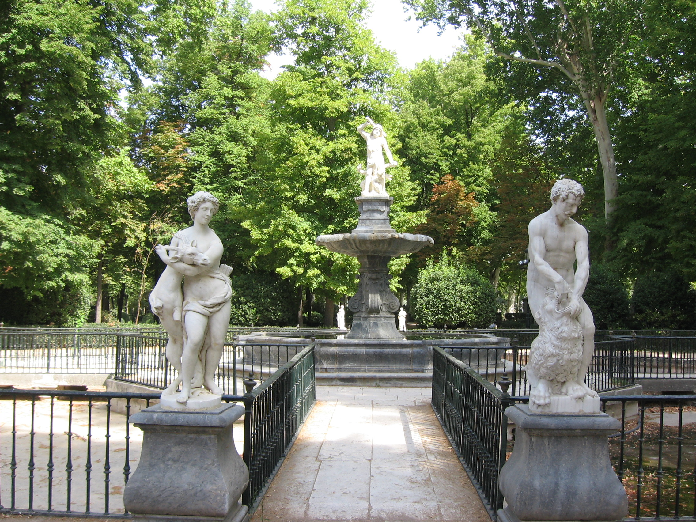

La fachada norte del Palacio está separada del Jardín de la Isla por una ría enlosada, que se ensancha en abanico formando la Cascada llamada de las Castañuelas, obra de Bonavía. La ría se puede atravesar por dos puentes - uno, con escalones, data de 1733 - el otro surgió en principio como simple boca de las compuertas que dan entrada al agua del Tajo, pero luego se habilitó encima una rampa para que entrase en el Jardín la carriola de la Reina, tal y como aparece en los cuadros de Battaglioli que muestran las fiestas de Farinelli. Para acceder a la isla es más evocador bajar por el puente escalonado, que se une al bello conjunto barroco de la fuente de Hércules, con sus estanques y pasarelas del siglo XVII. El Jardín de la isla adquirió su estructura definitiva en 1 560, merced a Felipe II y Juan Bautista de Toledo. La iniciativa de convertir el vergel de la isla en un jardín italoflamenco arranca de la idea de Carlos V de elegir Aranjuez "para en él fundar una casa de campo para su recreo", según una Real Cédula de 30 de abril de 1544, ampliando otra ocho años anterior. Pero fue su hijo quien durante su etapa de gobierno, siendo Príncipe, emprendió las obras de ordenación en agricultura, riegos y calles. Contó para ello con Gaspar de Vega y Alonso de Covarrubias, que en 1550 estableció la forma en que habían de ser dispuestas las calles y cruceros de los Jardines y las puertas de mármol de la huerta.
